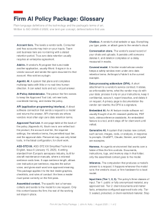

Firm AI Use Policy Package
A model AI use policy for a law firm, with everything a firm needs to adapt and adopt it. The package has four parts, and this page walks them in order: the policy and the documents that put it to work, a presentation built for a partnership meeting, a policy write-up for each AI product a firm is likely to consider, and a one-page cost sheet. This is research assistance from one practitioner to another, built from public authorities; the bracketed decisions and final adoption belong to your firm and its counsel.
Start here
Ten minutes of orientation: the video tour of the package, and the one page a decision-maker keeps.
-
Video Walkthrough
A short guided tour of the package: what each set of documents does, and where to start for your role.
Being filmed; the link will land here shortly. -

Cost and Configuration Estimates
One page: what each product costs per seat, the commitment floors, and how long each takes to stand up. Published prices are marked; press-reported figures are flagged as such.
Open Cost Sheet (PDF)
Part one: the policy
One document holds the rules; the documents around it put those rules to work for each audience. Adopt the policy, and the rest travels with it.
-

Model Firm AI Use Policy
The centerpiece: twelve sections mapped to the State Bar's duty structure, from the Approved Tool List and confidentiality input tiers to citation verification, supervision, billing, and court compliance. Bracketed items mark the firm's decisions. Everything else on this page implements or explains this document.
Open Model Policy (PDF)
For everyone, every day
The three pages staff actually work from. Sections 4 and 5 of the policy, made usable.
- Staff Quick Reference: the whole policy on one page, for the wall or the top drawer.
- Placeholder Card: how to strip client identifiers before text reaches any cloud tool, with the standard substitutions.
- Verification Prompt Pack: copy-and-paste prompts for the citation ladder and the fact check.
For court filings
Section 9 of the policy: the disclosure instruments and the local rules they answer to.
- Court Disclosure Kit: the CMC attachment, the optional per-filing certificate, and the Santa Clara ex parte note.
- County Compliance Matrix: the six California counties with AI local rules, verified against the rule texts, plus the statewide layer.
For firm management
The adoption decision and its moving parts; the cost sheet at the top of this page is this group's companion.
- Adoption Notes for Firm Management: cyber insurance expectations, budget benchmarks, seat-versus-usage pricing, and a training cadence.
The analysis and the record
Why the policy says what it says, and the proof its authorities were checked.
- Where the Data Lives: chatboxes, add-ins, and harnesses analyzed for what actually leaves the building in each; the analysis behind the policy's tool rules.
- Grounding Sources: where to get authoritative statute and rule text, and the free case-retrieval chain.
- Authority Cite-Check: the package's own verification record, every authority checked against source.
Part two: the presentation
Built to walk a partnership through the package in about an hour; I am glad to present it live.
-

Presentation Deck
Twenty-four slides, plain-language edition: chatboxes, add-ins, and harnesses under one written policy, the vendor landscape on the policy's own measures, and the decisions a firm has to make.
Open Presentation Deck (PDF) -

Glossary
Every term of art in these materials, defined in plain language: from the Approved Tool List and input tiers to zero data retention and covered models. The reading aid for everything else on this page.
Open Glossary (PDF)
Part three: the product policy documents
The model policy implemented for each product a firm is likely to consider, organized the way the policy sees the world: by how the tool works with your files. Each document gives the setup steps, what may go in, and the vendor's actual terms, graded by whether they bind. The how-to-use page explains the status labels and the reading order.
Chatboxes
You visit the tool; nothing goes in unless someone puts it there.
- ChatGPT BusinessReady to adopt: the workspace tier, with the signup-day confirmations.
- Claude TeamReady to adopt: the strongest chatbox paper; the no-training term is a contract prohibition.
The add-in suite
The tool lives inside Word, Outlook, and the rest; every invocation reads the open document.
- Microsoft 365 CopilotReady to adopt: with the tenant-permissions audit first, because Copilot makes every oversharing mistake searchable.
The harness
The tool comes to your files, and the record stays on your machines.
- Cursor with Privacy ModeReady to adopt: the benchmark for what a harness gives a firm: zero vendor retention and a complete local record at once.
The platforms
Upload-first: the vendor picks the models, and your documents live in its cloud for the term. Two publish real contracts; three ask for trust.
- HarveyReady to adopt, contract-verified: the best paper in the set, priced for larger firms.
- LegoraReady to adopt, contract-verified: near-identical protections, the plausible platform entry point by size.
- CoCounselConditional: strong published claims, weak paper; the ask list for the sales call is written out.
- Lexis+ AI ProtegeConditional, restricted: held to LexisNexis's own published standard for a compliant AI tool.
- Vincent (vLex)Not approved on public terms: the security page promises what the terms take back; the document says what would change the answer.
Everywhere else
AI features arriving inside software the firm already owns.
- Embedded AI FeaturesRule live now: the one-page card for meeting assistants, PDF chat, and whatever arrives next; when in doubt, it is off.
Making it your firm's own
The package is built to be adapted, and five questions do most of the tailoring:
- Who would serve as the firm's AI Policy Administrator.
- The practice areas, and the counties where the firm regularly files.
- What AI tools people are actually using today, and on what accounts. The honest inventory matters more than the aspirational one.
- Whether any clients impose AI restrictions in engagement terms or outside counsel guidelines.
- The firm's appetite on voluntary disclosure: the CMC attachment as a default in every litigated matter, or reserved for matters where AI use is material.
None of this is meant to be absorbed in one sitting. If a document raises a question, or you want the presentation live for your partners, write me or call.